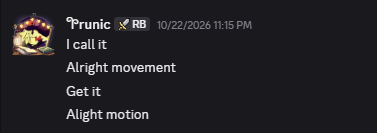
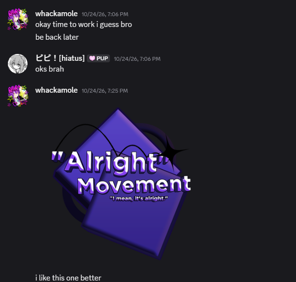

Larp everything.
This plugin was just made for fun and supposed to be GATEKEEPED.
The interface
The editor is one window with a top bar, three working panels and a status line. It floats by default; click Dock to dock it as a Studio widget (the button then reads Float).
| Area | Where | What it does |
|---|---|---|
| Top bar | Across the top | Use Selection, Refresh, + Key, Live Recording, Play, Exit / Projects, Save, Export, Looped, and the current frame label. |
| EXPLORER | Left | Lists the GUI objects in your project. Click one to make it the target. |
| PREVIEW / EDIT | Center, top | Shows your GUI at the chosen resolution, with handles for moving, resizing and rotating the selected object. |
| TIMELINE | Center, bottom | Frame ruler, one track per animated property, keyframes, audio clips and event markers. |
| PROPERTIES | Right | Properties of the selected object. Click a row to choose the property to animate; type a value to change it. |
| Status line | Bottom | Short messages explaining what just happened, or why something was refused. |
Top bar buttons
| Button | Use it to |
|---|---|
| Use Selection | Load the ScreenGui (or an object inside it) you selected in Studio as the animation source. |
| Refresh | Re-read the GUI from Studio after you changed it outside the plugin. |
| + Key | Add or update a keyframe for the selected property at the playhead. |
| Live Recording | Turn on to create keyframes automatically as you edit the selected property. |
| Play / Stop | Preview the animation. Pressing it again stops and resets the preview. |
| Exit / Projects | Go back to the project browser. |
| Save | Save the project inside your ScreenGui. |
| Export | Generate a ModuleScript you can use in your game. |
| Looped | Switch the animation between looping and playing once. |
Hotkeys
because clicking everything manually is kinda cringe. These are the shortcuts from the guide:
| Shortcut | What it does |
|---|---|
| Space | Play the preview, or stop and reset it. |
| Shift + H | Hide or show the whole editor. Space still plays/stops while it is hidden. |
| J | Step the playhead back one frame. |
| + / = | Add or update a keyframe for the selected property at the playhead. |
| Ctrl + click | Add or remove keyframes from the current selection. |
| Shift + click | Select a range of keyframes on the same track. |
| Shift + A | Select every keyframe. |
| Esc | Clear the current keyframe selection. |
| X, Delete or Backspace | Delete the selected keyframes. |
| Shift + B | Copy the selected keyframes. |
| Shift + V | Paste copied keyframes at the playhead. |
| Shift + Z | Undo. |
| Shift + Y | Redo. |
| K | Jump the playhead to the next keyframe. |
| G | Reset the selected object's Position, Size and Rotation to the values of its previous keyframe. If it has none, the status line says there's nothing to reset. |
| 7 | Open the KEYFRAME EASING picker when a keyframe is selected. |
| B | Cycle onion skin modes: press once for Static, twice quickly from Static for Automatic, and again to turn it off. |
Heads up: Some shortcuts depend on what is selected or whether the editor has focus. If a shortcut doesn't do anything, click back into the plugin and try again.
Keyframes & easing
Adding keyframes
A keyframe stores one property's value at one frame. The plugin blends between keyframes for you.
- Select an object in EXPLORER and a property in PROPERTIES.
- Move the playhead: click or drag in the timeline ruler, use the ◀ ▶ buttons, or press J to step back one frame.
- Type a new value in the property row, or drag the object's handles in the preview.
- Press + Key (or =) to store the value at the playhead.
Pressing + Key on a frame that already has a key updates it instead of adding a second one. Each property keeps its own track, so you can key Position and Transparency on different frames.
Live Recording skips step 4. Select an object and a property, turn Live Recording on, then change the value: a keyframe is created at the playhead each time. It watches only the one object and property you had selected when you turned it on. Scrubbing, playing and dragging keyframes never record.
Selecting and editing keyframes
- Click a keyframe to select it. Ctrl+click adds or removes keyframes from the selection. Shift+click selects the range on the same track.
- Shift+A selects every keyframe. Esc clears the selection.
- Drag selected keyframes to move them in time.
- X, Delete or Backspace deletes the selected keyframes.
- Shift+B copies the selected keyframes; Shift+V pastes them at the playhead.
- Shift+Z undoes and Shift+Y redoes.
- K jumps the playhead to the next keyframe.
- G resets the selected object's Position, Size and Rotation to the values of its previous keyframe. If it has none, the status line says there is nothing to reset.
Easing
Easing controls how a value travels from one keyframe to the next. It is stored on the keyframe where the move starts.
- Click a keyframe.
- Press 7. The KEYFRAME EASING picker opens.
- Click a style and direction. The keyframe changes colour to match its easing.
If nothing is selected, pressing 7 shows "Select a keyframe before choosing easing." You can also type a Style (such as Linear, Sine, Quad, Back, Bounce) and a Direction (In, Out, InOut) into the two boxes in the timeline toolbar. New keyframes use whatever those boxes say, and clicking a keyframe loads its values into them.
Playback & preview
Space or Play starts the preview; press again to stop and reset it. Drag in the ruler to scrub through the animation instead.
The box next to the zoom buttons sets the animation length in frames (default 120 at 60 fps). Use − and + to zoom the timeline. Looped makes the animation repeat. The current frame is shown in the top bar.
- Preview: Clone / Actual GUI / Both cycles what your edits and playback affect. Clone only touches a throwaway copy, so your real GUI stays untouched. Actual GUI edits the real objects in StarterGui. Both plays on the copy and the real GUI at once.
- Fixed / Fit switches the preview between a fixed pixel size and scaling to fit the panel.
- The two boxes beside the preview sizing controls set the preview resolution (default 1920 × 1080, allowed range 1 to 16384).
Start in Clone mode. Switch to Actual GUI only when you want edits to change your real GUI.
Onion skin
Onion skin draws ghost copies of your GUI at earlier (blue) and later (orange) frames so you can judge motion without playing it.
- Press B once for Static (ghosts stay put).
- Press B twice quickly from Static for Automatic (ghosts follow the playhead).
- Press B again to turn it off.
Audio clips
Audio clips can play alongside an animation. Add a supported audio asset, place it at the intended point in the timeline, and preview the sequence to check synchronization.
- Add an audio asset using a supported Roblox audio asset ID or local Studio audio file.
- Position the clip at the desired point in the animation.
- Preview playback and adjust timing as needed.
Audio not playing? Check that the asset is available to the experience, permissions are correct, and the asset has finished loading. Local file references may be temporary.
Animation events
Animation events mark points in the timeline where runtime code can trigger a registered action.
- Add an event marker and place it at the intended time.
- Set the event name expected by your runtime setup.
- Register a handler for that event before playback reaches it.
- Preview the animation and confirm the handler fires at the right time.
Remember An event marker does not execute arbitrary code by itself. The runtime must register a matching handler.
Saving projects
Save regularly to preserve your work and make it easier to return to an earlier version.
- Give each project a recognizable name.
- Save after significant keyframe or timeline changes.
- Reopen saved work when practical to verify the project is intact.
- Keep separate versions before major revisions.
Project data may include settings such as frame rate, duration, looping, tracks, and keyframes.
Exporting an animation
Exporting generates a ModuleScript you can use in your game. The exported module has its own setup requirements, so read the generated code before wiring it into your experience.
- Review the timeline, keyframes, duration, frame rate, and loop settings.
- Click Export to generate the ModuleScript.
- Place the generated module in an appropriate location for your experience.
- Read the generated module's setup instructions and exact method signatures.
- Test playback in a separate play session.
Do not guess method signatures. Use the generated module's actual API and initialization requirements. Keep editor-only code separate from runtime logic.
Customizing the theme (EXPERIMENTAL! CAN BE BUGGY do NOT TRY IT.)
Use the theme settings to personalize the editor's appearance. Available options can include accent, background, panel, separator, and title-bar colors, plus a background image.
- Open the theme settings.
- Adjust the colors or background image.
- Apply the changes and check text contrast throughout the interface.
The name & the logo
The name Alright Movement came from the idiot RUNIC cause hes DIIOT and UDMB and FUCKUHWQHJGSFJAOIRJH jk love u runic. The name was supposed to be "PGUIE" (P's GUI Editor) but this is wayyy better thanks runic.

A special thank you to whackamole for creating the logo!

Troubleshooting
It says to select a ScreenGui in StarterGui
Select the ScreenGui in Studio's Explorer first, then try creating the project again.
The animation does not play
Confirm that keyframes exist, the correct project is selected, and the playback position and duration are valid. Check the output for errors.
Keyframes behave unexpectedly
Check the target track, keyframe positions, values, and easing settings. Preview the sequence after making changes.
Audio does not play
Verify the asset ID, permissions, availability, and loading state. Test the audio independently if needed.
Events do not trigger
Check the marker's position and name, and ensure a matching handler is registered before playback reaches it.
The exported animation fails
Check the generated module's setup requirements, dependencies, and exact method signatures. Test in a clean play session and inspect runtime errors.
anyway good luck larping
Back to top ↑No matching sections found. Try another search term.